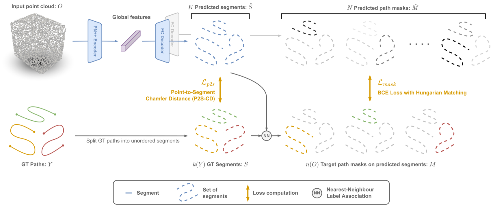
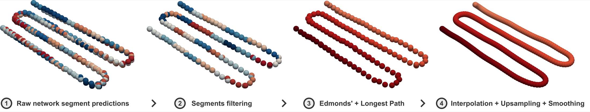
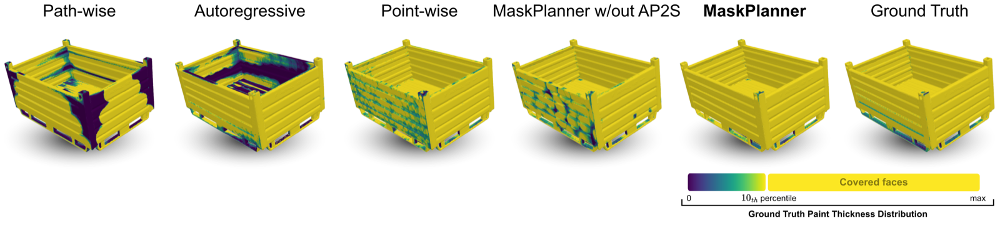

Abstract
Object-Centric Motion Generation (OCMG) plays a key role in a variety of industrial applications—such as robotic spray painting and welding—requiring efficient, scalable, and generalizable algorithms to plan multiple long-horizon trajectories over free-form 3D objects.
However, existing solutions rely on specialized heuristics, expensive optimization routines, or restrictive geometry assumptions that limit their adaptability to real-world scenarios.
In this work, we introduce a novel, fully data-driven framework that tackles OCMG directly from 3D point clouds, learning to generalize expert path patterns across free-form surfaces.
We propose MaskPlanner, a deep learning method that predicts local path segments for a given object while simultaneously inferring “path masks” to group these segments into distinct paths. This design induces the network to capture both local geometric patterns and global task requirements in a single forward pass.
Extensive experimentation on a realistic robotic spray painting scenario shows that our approach attains near-complete coverage (above 99%) for unseen objects, while it remains task-agnostic and does not explicitly optimize for paint deposition.
Moreover, our real-world validation on a 6-DoF specialized painting robot demonstrates that the generated paths are directly executable and yield expert-level painting quality.
We additionally provide empirical evidence that our approach remains complementary to downstream trajectory optimization methods, and applicable to tasks beyond spray painting.
Authored by Gabriele Tiboni, Raffaello Camoriano, and Tatiana Tommasi from Politecnico di Torino.
How MaskPlanner works
MaskPlanner reframes motion generation as predicting, in a single forward pass, a set of local path segments together with a set of path masks that group those segments into complete paths. A PointNet++ encoder turns the raw 3D point cloud into global features, and two decoders jointly output the segments and masks. A lightweight postprocessing step then concatenates the segments belonging to each mask into smooth, executable long-horizon paths. This design lets a single model handle a variable, a-priori-unknown number of variable-length, unordered paths—without any task-specific heuristics.

The Extended PaintNet dataset
We release the Extended PaintNet dataset—3,088 object/paths pairs, more than 3× the size of the original PaintNet. It spans four categories of growing complexity: Cuboids (simple raster patterns), Windows (a varying number of shorter paths), Shelves (convex and concave surfaces), and 88 real industrial Containers with high shape diversity. Use the arrows or dots to browse representative samples.
The full dataset is available for download in the Dataset section below.
From segments to executable paths
At inference, the raw predicted segments are grouped by their path mask and turned into a single executable trajectory: redundant segments are filtered out, the remaining ones are optimally ordered via Edmonds' algorithm and a longest-path search, and the result is interpolated, upsampled and smoothed into a dense sequence of 6-DoF end-effector poses.

Results: comparison to baselines
Across all four categories, MaskPlanner's predictions stay closest to the expert ground truth. Compared to path-wise, autoregressive and point-wise baselines—and to an ablation without our Asymmetric Point-to-Segment (AP2S) curriculum—it best captures both fine local path structure and the correct global number of paths.

Paint coverage in simulation
When the predicted paths are executed in a spray-painting simulator, MaskPlanner achieves the highest paint coverage and the lowest variance across every category, even though coverage is never part of its training objective.

Real-world validation
We deploy MaskPlanner on a real 6-DoF Efort GR-680 spray-painting robot. Given only the object point cloud, the full pipeline predicts all paths in ~100 ms (plus ~100 ms of postprocessing). The generated trajectories are kinematically and dynamically feasible, and the final powder-coating result is indistinguishable from expert ground-truth paths.
Dataset
Download the Extended PaintNet dataset at https://zenodo.org/records/14967945.
You may unzip the object categories (cuboids, windows, shelves, containers) at the link above into a local path path/to/dataset/. Then, add the environment variable export PAINTNET_ROOT=path/to/dataset/.
Acknowledgments
This study was carried out within the FAIR — Future Artificial Intelligence Research and received funding from the European Union Next-GenerationEU (PIANO NAZIONALE DI RIPRESA E RESILIENZA (PNRR) – MISSIONE 4 COMPONENTE 2, INVESTIMENTO 1.3 – D.D. 1555 11/10/2022, PE00000013). This manuscript reflects only the authors’ views and opinions; neither the European Union nor the European Commission can be considered responsible for them.
We also acknowledge the support of the European H2020 ELISE project (www.elise-ai.eu) and the CINECA award under the ISCRA initiative (DRE-URL - HP10CF881L) for the availability of HPC resources and support.
This work was supported by the EFORT group, providing the authors with domain knowledge, original object meshes, trajectory data, and access to the proprietary spray painting simulator and hardware used during the experiments.
Citing
@ARTICLE{tibonimaskplanner,
author={Tiboni, Gabriele and Camoriano, Raffaello and Tommasi, Tatiana},
journal={IEEE Transactions on Robotics},
title={MaskPlanner: A Framework for 3D Learning-Based Object-Centric Motion Generation and Applications to Robotic Spray Painting},
year={2026},
volume={},
number={},
pages={1-20},
doi={10.1109/TRO.2026.3699455}
}